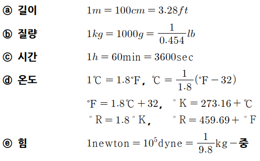
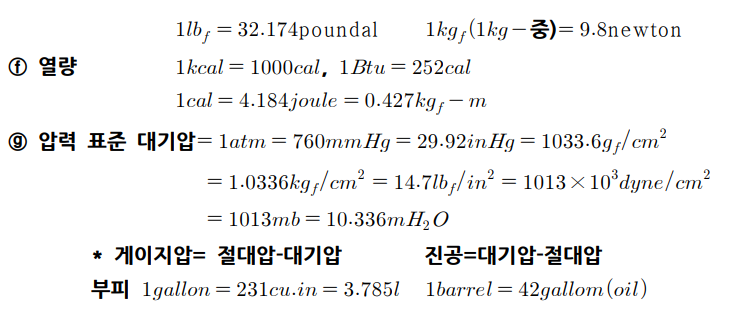
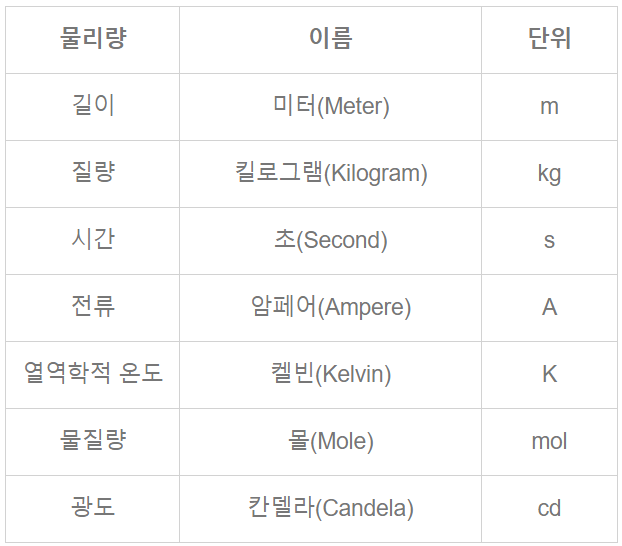
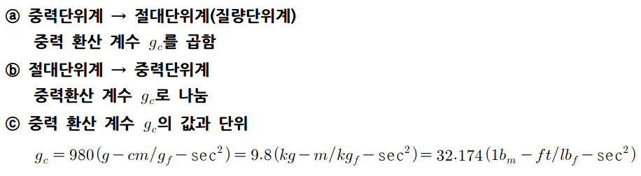
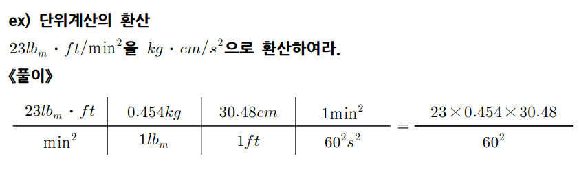
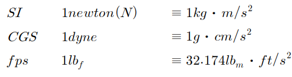
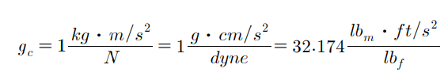
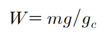
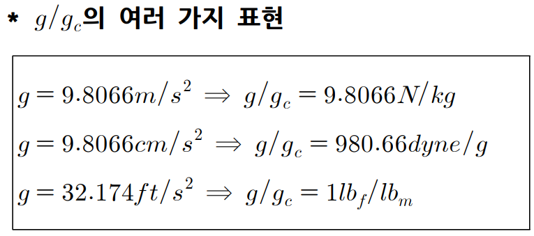

화공양론 1: 단위환산 및 힘과 무게
화공의 기본 뼈대가 되는 것이 화공양론으로, 화공양론을 마스터하면 화공의 50%는 배웠다고 보면 된다.
1) 차원(dimension) 과 단위
차원이라고 하면 측정되는 값의 특성을 나타내는 것이다. 차원에는 길이, 시간, 질량, 온도 등등이 있고 기호로 L,t,m,T 등으로 나타낼 수 있다. 어떤 값을 측정했을 때, 차원이 같으면 비교가 가능하지만 차원이 다르면 비교할 수 없다.
단위는 차원을 나타내는 수단으로 기본단위인 m,s, kg, K등이 있고 이들을 연산하여 유도단위를 만들 수 있다.
2) 단위환산
단위에서 가장 중요한 것은 환산이다. 세상에는 많은 단위계가 존재하므로, 어떤 단위를 다른 단위로 바꿔야 할 수 있다.
이때 환산하는 방법은 환산인자를 곱하는 것이다.
다음은 단위 환산의 예시이다.
 
**단위계 환산
현재 쓰이는 단위 중 표준은 절대 단위(SI 단위) 이며 편의상 mks(m, kg, s)단위라고 부르기도 한다.(엄밀히는 mks 단위계가 발전한 것이 SI단위이다. MKS단위계에 몇가지 기본단위, 예를 들어 암페어 등이 포함되어서 SI 단위가 되었다.)
뉴턴(N = kg·m/s²) , 줄 (J = N·m) , 와트 (W = J/s) 등은 mks 단위를 쓰며 SI 단위계에 해당한다.

대부분의 나라에서는 SI 단위계를 절대단위로 쓰지만 각 나라의 공학분야에서는 공학단위라는 것을 따로 지정해 공학분야에서 사용한다. 이는 계산의 편의를 위한 것인데, 대부분의 나라에서 공학단위로 중력단위계를 쓴다.
SI단위계의 기본단위는 MLT지만 중력단위계의 기본단위는 FLT이다. (힘(force), 길이(length), 시간(time)) 즉, 기본단위중에서 질량이 힘으로 바뀐 것이다. (F=ma 관계를 이용하면 남은 하나는 자동으로 도출된다)
이때, 힘을 나타내는 단위는 단위계에 따라 달라진다 ( kgf , lbf )
(왜 중력단위계가 공학에서 사용되어왔는가?
>예를 들어 생각해보자.일반적인 사람들, 특히 과학, 공학 공부를 별로 하지 않은 사람들은 질량과 무게의 개념을 잘 구분하지 않는다.
사람들은 '질량' 80 kg의 포대는 '무겁고',들어올리려면 '힘'이 필요하다고 생각한다. 80 kg을 '질량'이 아닌 '무게', '힘'으로 인식한다.'근력'측정기는 힘을 측정한는 것임에도질량의 단위인 'kg'으로 결과물을 인식한다.
(물론 요즘 제품은 kgf로 표시하고 뉴턴 등도 선택 가능)
왜냐하면 지구상에서는 항상 kg이 kgf의 힘을 만들기 때문이다.
이러한 이유로 과거의 일선 공학자들은
간편함과 직관적인 이해의 용이함때문에
모든 계산 결과물이 힘을 기준으로 나타나도록
단위계를 재편성하였고,
그것이 공학단위계이다.
결론적으로, 중력단위계와 절대단위계 사이에 서로 환산을 하는 경우가 많다. 이때 환산 방법은 다음과 같다.

kgf 중력단위계를 SI로 : 9.8N/1kgf
lbf 중력단위계를 UK로 : 32.174 lbm*ft/s^2 // 1 lbf

침착하기만 하면 된다.
힘과 무게
힘의 단위는 다음과 같다.
 
gc는 힘과 kg 사이의 관계를 나타내주는 식이다. 즉 FLT를 MLT 단위계로 바꾸는데 쓰인다.
무게는 힘의 일종이며 다음 식을 통해 쓸 수 있다.
 
W=mg로 표현하기도 하지만, 이 경우 w의 단위가 kg*m/s^2이 된다. 그런데 W는 힘이므로 힘의 단위로 나타내는 게 좋으며 이를 위해 gc로 나누어 준다.